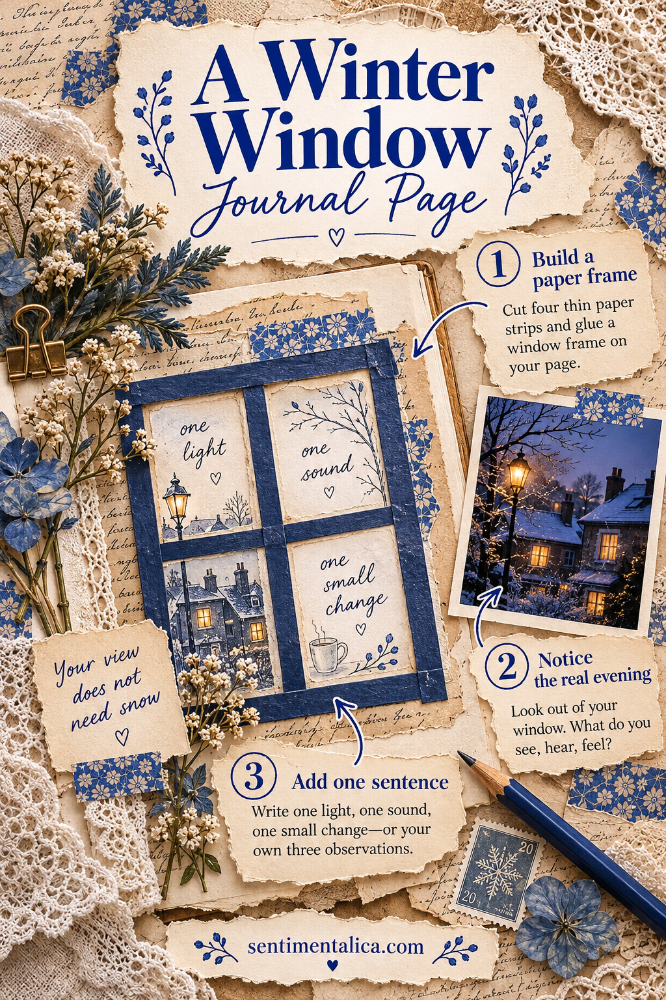
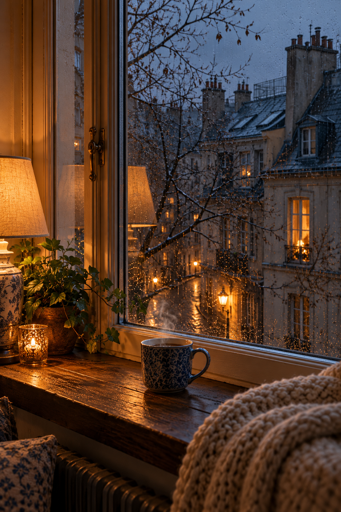

A winter page does not need snowfall. The square of light across the street, a bare branch against blue sky, or your own reflection after sunset can give you a place to begin. This page uses a simple paper window to hold what you noticed during one early dark evening, with room for words underneath.
Look before choosing the paper
Sit by a window for a few minutes while the light changes. Notice something close to the glass, something farther away, and one source of light. A pot on the sill, the roof opposite, and a streetlamp make a complete little scene. If the view is mostly walls, look for the colour of those walls and the shape of the shadows.
Write three fragments on a spare slip. “Bare branch. Yellow kitchen across the courtyard. Blue collecting under the roofs.” You are gathering your own observations, not describing an ideal winter. Add the time if the quick arrival of darkness is part of what you want to remember.
Make a window from ordinary paper
Choose a journal page and a plain rectangular scrap for your view. Leave a margin around it, especially near the spine. You can draw a loose window frame directly onto the page or make one from four narrow paper strips. Using strips avoids cutting a hole in the middle of a sheet and gives you room to adjust the proportions.

Lay the strips over the rectangle without gluing. Try one upright strip to suggest two panes, or add upright and crosswise dividers like the illustrated example. Leave the centre open if that feels more like your own window. Keep the lower strip narrow enough that it does not become a heavy visual shelf. A little asymmetry is fine; the shape only needs to help the eye recognise a window.
Put your real view inside the frame
Fill the inner rectangle with a small sketch, a simple block of colour, or a handwritten description. For a sketch, use only a few shapes: the roofline, the branch, the lit square. If drawing feels uncomfortable, write the fragments in the rectangle and let the words make the view. Both approaches preserve what you saw.
A photograph is another option, but it does not need to show a dramatic landscape. Crop your own photo to the part that caught your attention. Leave out neighbours’ identifiable private details if you plan to share the page online. A small colour study can capture the same atmosphere without recording a person or a home.
Write what was happening on your side of the glass
Below the window, add a few lines about the room you were in. “The kettle clicked off before I noticed how dark it had become. I left the overhead light off for another minute.” A sound or a small action connects the view to your lived evening. You do not need to turn it into a reflection on the whole season.

If you want a gentle prompt, finish “At this window tonight, I noticed…” Keep the ending concrete. A neighbour’s curtain moving or steam rising from your cup will bring you back to the moment more easily than a general word such as peaceful. Include the date somewhere that remains easy to find.
Finish with one seasonal detail
Add a narrow decorative strip, a small winter image detail, or a blue pencil line outside the window frame. Keep the scene inside the frame distinct from the decoration around it. This is especially helpful when the printed imagery shows snow but your actual evening was wet, dark, or completely clear.
Glue the frame after you have checked the writing space and the page’s movement near the spine. Let it dry open. Stop with some paper still showing around the composition; that space gives your little window a sense of quiet. When you return to the page, the value will be the evening you actually saw, held for a moment before it changed.